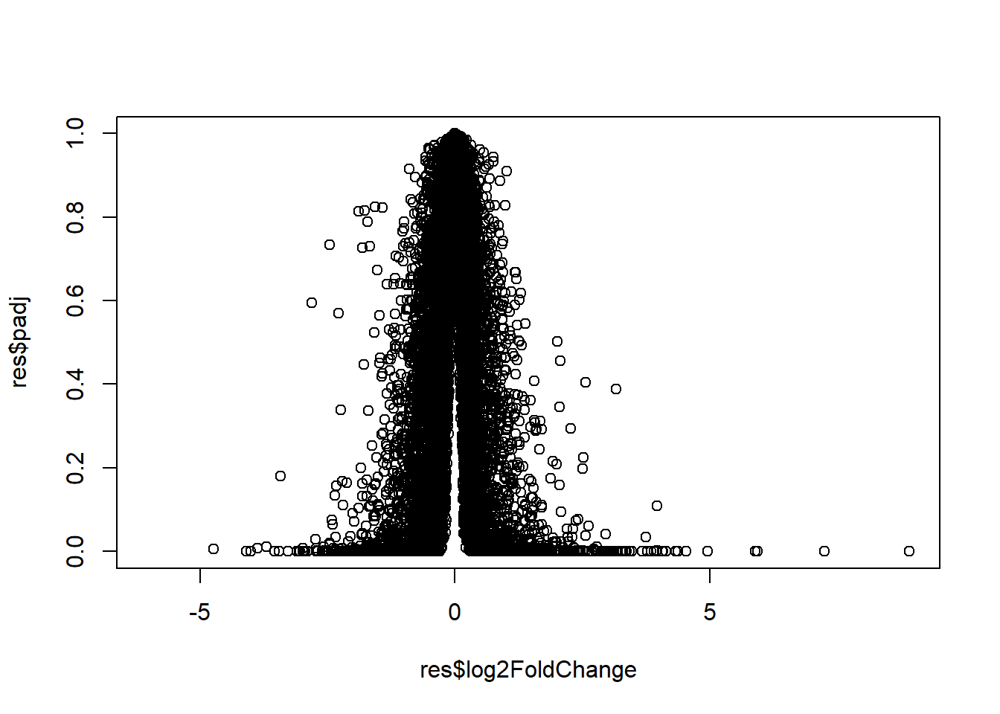

metadata <-read.csv("airway_metadata.csv")
counts <- read.csv("airway_scaledcounts.csv", row.names=1)class 12: RNAseq analysis
We will use DESeq2 package for today’s class studying the an RNA-seq experiment where airway smooth muscle cells were treated with dexamethasone, a synthetic glucocorticoid steroid with anti-inflammatory effects (Himes et al. 2014).
Import countData and colData
the DESeq2 package expects 1) countData (counts for every transcript in each experiment) 2) colData (metadata that describes the experimental setup)
metadata id dex celltype geo_id
1 SRR1039508 control N61311 GSM1275862
2 SRR1039509 treated N61311 GSM1275863
3 SRR1039512 control N052611 GSM1275866
4 SRR1039513 treated N052611 GSM1275867
5 SRR1039516 control N080611 GSM1275870
6 SRR1039517 treated N080611 GSM1275871
7 SRR1039520 control N061011 GSM1275874
8 SRR1039521 treated N061011 GSM1275875head(counts) SRR1039508 SRR1039509 SRR1039512 SRR1039513 SRR1039516
ENSG00000000003 723 486 904 445 1170
ENSG00000000005 0 0 0 0 0
ENSG00000000419 467 523 616 371 582
ENSG00000000457 347 258 364 237 318
ENSG00000000460 96 81 73 66 118
ENSG00000000938 0 0 1 0 2
SRR1039517 SRR1039520 SRR1039521
ENSG00000000003 1097 806 604
ENSG00000000005 0 0 0
ENSG00000000419 781 417 509
ENSG00000000457 447 330 324
ENSG00000000460 94 102 74
ENSG00000000938 0 0 0Q1. How many genes are in this dataset?
nrow(counts)[1] 38694There are 38695 genes in this dataset.
Q2. How many ‘control’ cell lines do we have?
table(metadata$dex)
control treated
4 4 There are 4 control cell lines.
another way:
sum(metadata$dex == "control")[1] 4Toy differential gene expression
Step1. Calculate the mean expression (counts) of each gene for control cells
Q3. How would you make the above code in either approach more robust?
- find which columns in countData are “control” samples by look into the dex column in metadata
ctrl.inds <- metadata$dex == "control"- Extract all the control columns from countData
ctrl.counts <- counts[,ctrl.inds]
head(ctrl.counts) SRR1039508 SRR1039512 SRR1039516 SRR1039520
ENSG00000000003 723 904 1170 806
ENSG00000000005 0 0 0 0
ENSG00000000419 467 616 582 417
ENSG00000000457 347 364 318 330
ENSG00000000460 96 73 118 102
ENSG00000000938 0 1 2 0- Calculate the mean of counts in each row (gene) in
ctrl.counts.
ctrl.mean <- rowMeans(ctrl.counts)
head(ctrl.mean)ENSG00000000003 ENSG00000000005 ENSG00000000419 ENSG00000000457 ENSG00000000460
900.75 0.00 520.50 339.75 97.25
ENSG00000000938
0.75 Step2. Calculate the mean expression (counts) of each gene for treated cells > Q4. Follow the same procedure for the treated samples (i.e. calculate the mean per gene across drug treated samples and assign to a labeled vector called treated.mean)
treated.counts <- counts[,metadata$dex == "treated"]
treated.mean <- rowMeans(treated.counts)
head(treated.mean)ENSG00000000003 ENSG00000000005 ENSG00000000419 ENSG00000000457 ENSG00000000460
658.00 0.00 546.00 316.50 78.75
ENSG00000000938
0.00 We now have control and treated mean values. For ease of book-keeping I will combine these vectors into a data.frame called meancounts
meancounts <- data.frame(ctrl.mean, treated.mean)
head(meancounts) ctrl.mean treated.mean
ENSG00000000003 900.75 658.00
ENSG00000000005 0.00 0.00
ENSG00000000419 520.50 546.00
ENSG00000000457 339.75 316.50
ENSG00000000460 97.25 78.75
ENSG00000000938 0.75 0.00Q5 (a). Create a scatter plot showing the mean of the treated samples against the mean of the control samples.
plot(meancounts)Q5 (b).You could also use the ggplot2 package to make this figure producing the plot below. What geom_?() function would you use for this plot?
library(ggplot2)ggplot(meancounts) +
aes(ctrl.mean, treated.mean) +
geom_point() Q6. Try plotting both axes on a log scale. What is the argument to plot() that allows you to do this?
log = “xy” argument allows us to plot with log scale on both x and y axis.
plot(meancounts, log = "xy", xlab = "log Control", ylab = "log Treated")Warning in xy.coords(x, y, xlabel, ylabel, log): 15032 x values <= 0 omitted
from logarithmic plotWarning in xy.coords(x, y, xlabel, ylabel, log): 15281 y values <= 0 omitted
from logarithmic plot
ggplot(meancounts) +
aes(ctrl.mean, treated.mean) +
geom_point() +
scale_x_log10() + scale_y_log10()Warning: Transformation introduced infinite values in continuous x-axisWarning: Transformation introduced infinite values in continuous y-axisWe will use log2 scale for skewed data because we really care most about relative changes in magnitude.
We most often use log2 as our transform because the math is easier to interpret than log10 and ln.
If we have no fold change (ratio = 1) bewteen the gene expressions of control and treated samples, we will have log2(1) = 0.
If we have 2 fold change, log2(2) = +1. If we have 1/2 fold change, log2(1/2) = -1.
log10(2)[1] 0.30103log2(1/2)[1] -1log10(1/2)[1] -0.30103Let’s calculate the log2 fold change between treated vs. control, and add it to the meancounts data.frame
meancounts$log2fc <- log2(meancounts$treated.mean / meancounts$ctrl.mean)
head(meancounts) ctrl.mean treated.mean log2fc
ENSG00000000003 900.75 658.00 -0.45303916
ENSG00000000005 0.00 0.00 NaN
ENSG00000000419 520.50 546.00 0.06900279
ENSG00000000457 339.75 316.50 -0.10226805
ENSG00000000460 97.25 78.75 -0.30441833
ENSG00000000938 0.75 0.00 -InfPositive log2fc means gene expression is upregulated after treatment.
Q8. Using the up.ind vector above can you determine how many up regulated genes we have at the greater than 2 fc level?
sum(meancounts$log2fc >= 2, na.rm = TRUE)[1] 1910There are 1910 upregulated genes with a fc level >2.
Q9. Using the down.ind vector above can you determine how many down regulated genes we have at the greater than 2 fc level?
sum(meancounts$log2fc <= -2, na.rm = TRUE)[1] 2330There are 2330 downregulated genes with a fc level >2.
Q10. Do you trust these results? Why or why not?
We do not trust these results because we don’t know if the fold change is significant or not.
DESeq2 analysis
We also need to test if these fold changes significant.
To do this properly we will turn to the DESeq2 package.
#I message: false
library(DESeq2)Loading required package: S4VectorsLoading required package: stats4Loading required package: BiocGenerics
Attaching package: 'BiocGenerics'The following objects are masked from 'package:stats':
IQR, mad, sd, var, xtabsThe following objects are masked from 'package:base':
anyDuplicated, aperm, append, as.data.frame, basename, cbind,
colnames, dirname, do.call, duplicated, eval, evalq, Filter, Find,
get, grep, grepl, intersect, is.unsorted, lapply, Map, mapply,
match, mget, order, paste, pmax, pmax.int, pmin, pmin.int,
Position, rank, rbind, Reduce, rownames, sapply, setdiff, sort,
table, tapply, union, unique, unsplit, which.max, which.min
Attaching package: 'S4Vectors'The following objects are masked from 'package:base':
expand.grid, I, unnameLoading required package: IRanges
Attaching package: 'IRanges'The following object is masked from 'package:grDevices':
windowsLoading required package: GenomicRangesLoading required package: GenomeInfoDbLoading required package: SummarizedExperimentLoading required package: MatrixGenericsLoading required package: matrixStats
Attaching package: 'MatrixGenerics'The following objects are masked from 'package:matrixStats':
colAlls, colAnyNAs, colAnys, colAvgsPerRowSet, colCollapse,
colCounts, colCummaxs, colCummins, colCumprods, colCumsums,
colDiffs, colIQRDiffs, colIQRs, colLogSumExps, colMadDiffs,
colMads, colMaxs, colMeans2, colMedians, colMins, colOrderStats,
colProds, colQuantiles, colRanges, colRanks, colSdDiffs, colSds,
colSums2, colTabulates, colVarDiffs, colVars, colWeightedMads,
colWeightedMeans, colWeightedMedians, colWeightedSds,
colWeightedVars, rowAlls, rowAnyNAs, rowAnys, rowAvgsPerColSet,
rowCollapse, rowCounts, rowCummaxs, rowCummins, rowCumprods,
rowCumsums, rowDiffs, rowIQRDiffs, rowIQRs, rowLogSumExps,
rowMadDiffs, rowMads, rowMaxs, rowMeans2, rowMedians, rowMins,
rowOrderStats, rowProds, rowQuantiles, rowRanges, rowRanks,
rowSdDiffs, rowSds, rowSums2, rowTabulates, rowVarDiffs, rowVars,
rowWeightedMads, rowWeightedMeans, rowWeightedMedians,
rowWeightedSds, rowWeightedVarsLoading required package: BiobaseWelcome to Bioconductor
Vignettes contain introductory material; view with
'browseVignettes()'. To cite Bioconductor, see
'citation("Biobase")', and for packages 'citation("pkgname")'.
Attaching package: 'Biobase'The following object is masked from 'package:MatrixGenerics':
rowMediansThe following objects are masked from 'package:matrixStats':
anyMissing, rowMediansTo use DESeq we need our imput count Data and colData in a specific format that DESeq wants:
dds <- DESeqDataSetFromMatrix(countData = counts,
colData = metadata,
design = ~dex)converting counts to integer modeWarning in DESeqDataSet(se, design = design, ignoreRank): some variables in
design formula are characters, converting to factorsTo run the analysis I can now use the main DESeq2 function called DESeq2 with ddsas input.
dds <- DESeq(dds)estimating size factorsestimating dispersionsgene-wise dispersion estimatesmean-dispersion relationshipfinal dispersion estimatesfitting model and testingTo get the results back from this dds object we can use the results() function from the package.
res <- results(dds)
reslog2 fold change (MLE): dex treated vs control
Wald test p-value: dex treated vs control
DataFrame with 38694 rows and 6 columns
baseMean log2FoldChange lfcSE stat pvalue
<numeric> <numeric> <numeric> <numeric> <numeric>
ENSG00000000003 747.1942 -0.3507030 0.168246 -2.084470 0.0371175
ENSG00000000005 0.0000 NA NA NA NA
ENSG00000000419 520.1342 0.2061078 0.101059 2.039475 0.0414026
ENSG00000000457 322.6648 0.0245269 0.145145 0.168982 0.8658106
ENSG00000000460 87.6826 -0.1471420 0.257007 -0.572521 0.5669691
... ... ... ... ... ...
ENSG00000283115 0.000000 NA NA NA NA
ENSG00000283116 0.000000 NA NA NA NA
ENSG00000283119 0.000000 NA NA NA NA
ENSG00000283120 0.974916 -0.668258 1.69456 -0.394354 0.693319
ENSG00000283123 0.000000 NA NA NA NA
padj
<numeric>
ENSG00000000003 0.163035
ENSG00000000005 NA
ENSG00000000419 0.176032
ENSG00000000457 0.961694
ENSG00000000460 0.815849
... ...
ENSG00000283115 NA
ENSG00000283116 NA
ENSG00000283119 NA
ENSG00000283120 NA
ENSG00000283123 NAAdd Annotation
Our result table so far only contains the Ensembl gene IDs. However, alternative gene names and extra annotation are usually required for informative interpretation of our results. In this section we will add this necessary annotation data to our results.
library("AnnotationDbi")
library("org.Hs.eg.db")# The later of these is is the organism annotation package (“org”) for Homo sapiens (“Hs”), organized as an AnnotationDbi database package (“db”), using Entrez Gene IDs (“eg”) as primary key. To get a list of all available key types that we can use to map between (different language it speaks), use the columns() function
columns(org.Hs.eg.db) [1] "ACCNUM" "ALIAS" "ENSEMBL" "ENSEMBLPROT" "ENSEMBLTRANS"
[6] "ENTREZID" "ENZYME" "EVIDENCE" "EVIDENCEALL" "GENENAME"
[11] "GENETYPE" "GO" "GOALL" "IPI" "MAP"
[16] "OMIM" "ONTOLOGY" "ONTOLOGYALL" "PATH" "PFAM"
[21] "PMID" "PROSITE" "REFSEQ" "SYMBOL" "UCSCKG"
[26] "UNIPROT" totally 26 databases
We can use the mapIds() function to add individual columns to our results table.
res$symbol <- mapIds(org.Hs.eg.db,
keys=row.names(res), # Our genenames
keytype="ENSEMBL", # The format of our genenames is ENSEMBL ID
column="SYMBOL", # The new format we want to add
multiVals="first") # what to do if there are multiple possible values for a single input value. Here we ask to just give us back the first one that occurs in the database.'select()' returned 1:many mapping between keys and columnsQ11. Run the mapIds() function two more times to add the Entrez ID and UniProt accession and GENENAME as new columns called res\(entrez, res\)uniprot and res$genename.
res$entrez <- mapIds(org.Hs.eg.db,
keys=row.names(res),
keytype="ENSEMBL",
column="ENTREZID",
multiVals="first")'select()' returned 1:many mapping between keys and columns# Protein database Uniprot
res$uniprot <- mapIds(org.Hs.eg.db,
keys=row.names(res),
keytype="ENSEMBL",
column="UNIPROT",
multiVals="first")'select()' returned 1:many mapping between keys and columnsres$genename <- mapIds(org.Hs.eg.db,
keys=row.names(res),
keytype="ENSEMBL",
column="GENENAME",
multiVals="first")'select()' returned 1:many mapping between keys and columnshead(res)log2 fold change (MLE): dex treated vs control
Wald test p-value: dex treated vs control
DataFrame with 6 rows and 10 columns
baseMean log2FoldChange lfcSE stat pvalue
<numeric> <numeric> <numeric> <numeric> <numeric>
ENSG00000000003 747.194195 -0.3507030 0.168246 -2.084470 0.0371175
ENSG00000000005 0.000000 NA NA NA NA
ENSG00000000419 520.134160 0.2061078 0.101059 2.039475 0.0414026
ENSG00000000457 322.664844 0.0245269 0.145145 0.168982 0.8658106
ENSG00000000460 87.682625 -0.1471420 0.257007 -0.572521 0.5669691
ENSG00000000938 0.319167 -1.7322890 3.493601 -0.495846 0.6200029
padj symbol entrez uniprot
<numeric> <character> <character> <character>
ENSG00000000003 0.163035 TSPAN6 7105 A0A024RCI0
ENSG00000000005 NA TNMD 64102 Q9H2S6
ENSG00000000419 0.176032 DPM1 8813 O60762
ENSG00000000457 0.961694 SCYL3 57147 Q8IZE3
ENSG00000000460 0.815849 C1orf112 55732 A0A024R922
ENSG00000000938 NA FGR 2268 P09769
genename
<character>
ENSG00000000003 tetraspanin 6
ENSG00000000005 tenomodulin
ENSG00000000419 dolichyl-phosphate m..
ENSG00000000457 SCY1 like pseudokina..
ENSG00000000460 chromosome 1 open re..
ENSG00000000938 FGR proto-oncogene, ..Turn the data.frame into csv file:
write.csv(res, file = "DESeq_results.csv")Data Visualization
Let’s make a final volcano plot of log2 fold change vs. adjusted p-value.
plot(res$log2FoldChange,res$padj)
Since we care about low p-value data and we are lost in the skewed plot above. Lets take the negative log of adjusted p-value.
plot(res$log2FoldChange,-log(res$padj))
#add verticle line at x=-2 and +2 as log 2 fold change threshold
abline(v=c(-2,+2), col = "red")
#add a horizontal line at =log(0.05) to show adj. p-value threshold.
abline(h=-log(0.05), col = "red")#make a color vector to highlight the genes we care about
my.col <- rep("grey", nrow(res))
my.col[res$log2FoldChange>=2] <- "blue"
my.col[res$log2FoldChange<=-2] <- "red"
my.col[res$padj > 0.05] <- "grey"
plot(res$log2FoldChange,-log(res$padj), col = my.col)
#add vertical line at x=-2 and +2 as log 2 fold change threshold
abline(v=c(-2,+2), col = "grey")
#add a horizontal line at =log(0.05) to show adj. p-value threshold.
abline(h=-log(0.05), col = "grey")Pathway analysis
We can use the KEGG database of biological pathways to get some more insight into our differentially expressed genes and the kinds of biology they are involved in.
The KEGG pathway database, unlike GO for example, provides functional annotation as well as information about gene products that interact with each other in a given pathway, how they interact (e.g., activation, inhibition, etc.), and where they interact (e.g., cytoplasm, nucleus, etc.). Hence KEGG has the potential to provide extra insight beyond annotation lists of simple molecular function, process etc. In this analysis, we check for coordinated differential expression over gene sets from KEGG pathways instead of changes of individual genes. The assumption here is that consistent perturbations over a given pathway (gene set) may suggest mechanistic changes.
Here we play with just one, the GAGE package (which stands for Generally Applicable Gene set Enrichment), to do KEGG pathway enrichment analysis on our RNA-seq based differential expression results.
library(pathview)##############################################################################
Pathview is an open source software package distributed under GNU General
Public License version 3 (GPLv3). Details of GPLv3 is available at
http://www.gnu.org/licenses/gpl-3.0.html. Particullary, users are required to
formally cite the original Pathview paper (not just mention it) in publications
or products. For details, do citation("pathview") within R.
The pathview downloads and uses KEGG data. Non-academic uses may require a KEGG
license agreement (details at http://www.kegg.jp/kegg/legal.html).
##############################################################################library(gage)library(gageData)Get the KEGG databse.
data(kegg.sets.hs)
head(kegg.sets.hs, 2)$`hsa00232 Caffeine metabolism`
[1] "10" "1544" "1548" "1549" "1553" "7498" "9"
$`hsa00983 Drug metabolism - other enzymes`
[1] "10" "1066" "10720" "10941" "151531" "1548" "1549" "1551"
[9] "1553" "1576" "1577" "1806" "1807" "1890" "221223" "2990"
[17] "3251" "3614" "3615" "3704" "51733" "54490" "54575" "54576"
[25] "54577" "54578" "54579" "54600" "54657" "54658" "54659" "54963"
[33] "574537" "64816" "7083" "7084" "7172" "7363" "7364" "7365"
[41] "7366" "7367" "7371" "7372" "7378" "7498" "79799" "83549"
[49] "8824" "8833" "9" "978" # shows two pathways and genes (with entrez ID) that involved in this pathwayGet gene (Entrez ID) and their foldchange from our DESeq result data.frame.
# make a vector called fold changes
foldchanges <- res$log2FoldChange
# make a vector into matrix; lable each foldchange by the gene entrenz ID
names(foldchanges) <- res$entrezhead(foldchanges) 7105 64102 8813 57147 55732 2268
-0.35070302 NA 0.20610777 0.02452695 -0.14714205 -1.73228897 Run the gage pathway analysis.
# Get the results
keggres = gage(foldchanges, gsets=kegg.sets.hs)The result returned by gage function is a named list, with either 3 elements (“greater”, “less”, “stats”) .
attributes(keggres)$names
[1] "greater" "less" "stats" Each keggres$less and keggres$greater object is data matrix with gene sets as rows sorted by p-value. Look at the first three down (less) pathways.
head(keggres$less, 3) p.geomean stat.mean p.val
hsa05332 Graft-versus-host disease 0.0004250461 -3.473346 0.0004250461
hsa04940 Type I diabetes mellitus 0.0017820293 -3.002352 0.0017820293
hsa05310 Asthma 0.0020045888 -3.009050 0.0020045888
q.val set.size exp1
hsa05332 Graft-versus-host disease 0.09053483 40 0.0004250461
hsa04940 Type I diabetes mellitus 0.14232581 42 0.0017820293
hsa05310 Asthma 0.14232581 29 0.0020045888Now I can use KEGG IDs (“hsa05332”) of these pathways from gage yo view our genes mapped to these pathways usepathview().
pathview(gene.data=foldchanges, pathway.id="hsa05310")'select()' returned 1:1 mapping between keys and columnsInfo: Working in directory C:/Users/jenny/OneDrive/UCSD/BIO/BIMM 143/lab/class12Info: Writing image file hsa05310.pathview.png